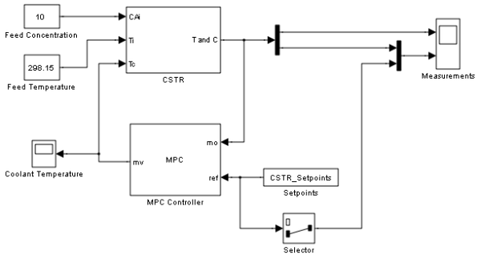
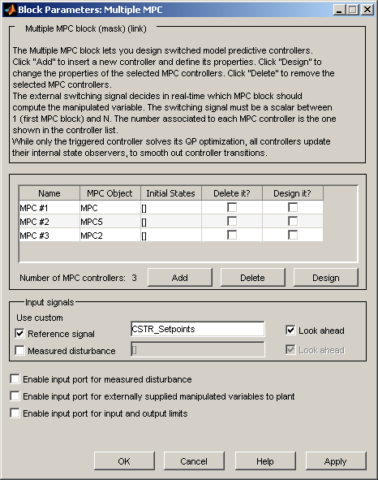

MPC Control of a Chemical Reactor with Multiple Operating Conditions
Contents
- Open-Loop Model: Linearize the Nonlinear CSTR Model
- Define a MPC Controller
- Test the Controller With a Step Disturbance in Feed Concentration
- Modify Controller Design: Increase Estimator Signal-to-Noise
- Test the Modified Controller for the Full Transition
- Design Another Controller for the Final Operating Condition
- Obtain a Third Controller for the Intermediate Operating Condition
- Control the Plant With the Multiple MPC Controllers Block
The objective is to control a chemical reactor (CSTR) as it transitions from an initial condition at low (~15%) conversion to a desired steady state at 80% conversion. The reaction is exothermic (liberates heat) and the CSTR temperature must be controlled to prevent a thermal runaway. Multiple MPC Controllers block is used to illustrate a scheduling based strategy to solve a nonlinear control problem with multiple operating conditions.
The reactor is modeled by 'CSTR_INOUT.mdl'. For background, see Seborg, D.E. et al., "Process Dynamics and Control", 2nd Ed., 2004, Wiley, pp.34-36.
Open-Loop Model: Linearize the Nonlinear CSTR Model
if ~mpcchecktoolboxinstalled('simulink') disp('Simulink(R) is required to run this demo.') return end if ~mpcchecktoolboxinstalled('scd') disp('Simulink Control Design(R) is required to run this demo.') return end
We need a linear model to use in MPC. The controller will adjust a coolant temperature, which is one of three plant inputs. The others are the concentration of the limiting reactant in the CSTR feed stream and the temperature of this stream. The CSTR states are the temperature and concentration of the limiting reactant in the product stream. We will assume that both can be measured and used for feedback control. As a first attempt, linearize the CSTR model at the initial condition. Functions from Simulink Control Design such as "operspec", "findop", "linearize", are used to generate the linear state space model.
Create operating point specification.
op = operspec('CSTR_INOUT'); % Feed concentration is known for the initial condition. op.Inputs(1).u = 10; op.Inputs(1).Known = true; % Feed temperature is known for the initial condition. op.Inputs(2).u = 298.2; op.Inputs(2).Known = true; % Desired residual concentration is known for the initial condition. op.Outputs(2).y = 8.57; op.Outputs(2).Known = true; % Compute initial condition. [op_point op_report] = findop('CSTR_INOUT',op); % Obtain nominal values of x, y and u. x0 = [op_report.States(1).x;op_report.States(2).x]; y0 = [op_report.Outputs(1).y;op_report.Outputs(2).y]; u0 = [op_report.Inputs(1).u;op_report.Inputs(2).u;op_report.Inputs(3).u];
Operating Point Search Report:
---------------------------------
Operating Report for the Model CSTR_INOUT.
(Time-Varying Components Evaluated at time t=0)
Operating point specifications were successfully met.
States:
----------
(1.) CSTR_INOUT/CSTR/Integrator
x: 311 dx: -1.83e-012 (0)
(2.) CSTR_INOUT/CSTR/Integrator1
x: 8.57 dx: -8.88e-015 (0)
Inputs:
----------
(1.) CSTR_INOUT/Feed Concentration
u: 10
(2.) CSTR_INOUT/Feed Temperature
u: 298
(3.) CSTR_INOUT/Coolant Temperature
u: 298 [-Inf Inf]
Outputs:
----------
(1.) CSTR_INOUT/CSTR Temperature
y: 311 [-Inf Inf]
(2.) CSTR_INOUT/Residual Concentration
y: 8.57 (8.57)
Obtain linear model at the initial condition.
CSTR = linearize('CSTR_INOUT', op_point); CSTR.InputName = {'C_f', 'T_f', 'T_c'}; CSTR.OutputName = {'T_r', 'C_r'};
Verify that the linear model is open-loop stable at this condition.
eig(CSTR)
ans = -0.5225 -0.8952
All eigenvalues are negative so the plant is open-loop stable.
Designate the coolant temperature as the manipulated variable.
CSTR.InputGroup.MV = 3;
The other two inputs are unmeasured disturbances.
CSTR.InputGroup.UD = [1, 2];
Create the MPC model format and set the nominal conditions.
Model.Plant = CSTR;
Model.Nominal.X = x0;
Model.Nominal.Y = y0;
Model.Nominal.U = [0;0;u0(3)]; % NOTE: nominal values for unmeasured disturbance must be zero.
Define a MPC Controller
Ts = 1; % Sampling time (minutes)
MPC = mpc(Model, Ts);
-->The "PredictionHorizon" property of "mpc" object is empty. Trying PredictionHorizon = 10. -->The "ControlHorizon" property of the "mpc" object is empty. Assuming 2. -->The "Weights.ManipulatedVariables" property of "mpc" object is empty. Assuming default 0.00000. -->The "Weights.ManipulatedVariablesRate" property of "mpc" object is empty. Assuming default 0.10000. -->The "Weights.OutputVariables" property of "mpc" object is empty. Assuming default 1.00000. for output(s) y1 and zero weight for output(s) y2
The goal will be to track a specified transition in the reactor concentration. The reactor temperature will be measured and used in state estimation but the controller will not attempt to regulate it directly. It will vary as needed to regulate the concentration. Thus, set its MPC weight to zero.
MPC.Weights.OV = [0 1];
All other MPC parameters are at their default values.
Test the Controller With a Step Disturbance in Feed Concentration
'CSTR_MMPC_1.mdl' contains a Simulink® model with CSTR and MPC Controller blocks in a feedback configuration.
open_system('CSTR_MMPC_1')
 Define a constant setpoint for the output.
CSTR_Setpoints.time = [0; 60]; CSTR_Setpoints.signals.values = [y0 y0]';
Test the response to a 5% increase in feed concentration.
set_param('CSTR_MMPC_1/Feed Concentration', 'Value', '10.5');
Set plot scales and simulate the response.
set_param('CSTR_MMPC_1/Measurements','Open','on') set_param('CSTR_MMPC_1/Coolant Temperature','Open','on') set_param('CSTR_MMPC_1/Measurements', 'Ymin', '305~8', 'Ymax', '320~9') set_param('CSTR_MMPC_1/Coolant Temperature', 'Ymin', '295', 'Ymax', '305') sim('CSTR_MMPC_1', 60)
-->Converting model to discrete time. -->The "Model.Disturbance" property of "mpc" object is empty: Assuming unmeasured input disturbance #1 is integrated white noise. Assuming unmeasured input disturbance #2 is integrated white noise. -->The "Model.Noise" property of the "mpc" object is empty. Assuming white noise on each measured output channel.
Modify Controller Design: Increase Estimator Signal-to-Noise
The controller is stable but its disturbance rejection is sluggish. Try increasing the state estimator signal-to-noise by a factor of 10 and test the design again.
D = ss(getindist(MPC)); D.b = eye(2)*10; set(D,'InputName',[],'OutputName',[],'InputGroup',[],'OutputGroup',[]); setindist(MPC, 'model', D);
Simulate model.
sim('CSTR_MMPC_1', 60)
-->Converting model to discrete time. -->The "Model.Noise" property of the "mpc" object is empty. Assuming white noise on each measured output channel.
NOTE: Plant inputs 1 and 2 are unmeasured disturbances. By default, the controller assumes integrated white noise with unit magnitude at these inputs when configuring the state estimator. The above statements increase the white noise magnitudes to 10.
Test the Modified Controller for the Full Transition
Define the desired setpoint transition. After a 10-minute warm-up period, ramp the concentration setpoint downward at a rate of 0.25 per minute until it reaches 2.0 kmol/m^3.
CSTR_Setpoints.time = [0 10 11:39]'; CSTR_Setpoints.signals.values = [y0(1)*ones(31,1),[y0(2);y0(2);(y0(2):-0.25:2)';2;2]];
The MPC Controller block is configured to use these setpoints in a look-ahead mode, i.e., anticipating the setpoint transition. This generally improves setpoint tracking.
open_system('CSTR_MMPC_1/MPC Controller')

Remove the 5% increase in feed concentration.
set_param('CSTR_MMPC_1/Feed Concentration', 'Value', '10')
Set plot scales and simulate the response.
set_param('CSTR_MMPC_1/Measurements', 'Ymin', '300~0', 'Ymax', '400~10') set_param('CSTR_MMPC_1/Coolant Temperature', 'Ymin', '240', 'Ymax', '360')
Simulate model.
sim('CSTR_MMPC_1', 60)
Design Another Controller for the Final Operating Condition
Performance along the full transition could be improved if another model were used. An obvious candidate would be one representing the desired final state. Obtain this by linearization as before and design a controller identical to the previous except for the prediction model.
Determine steady state conditions when CSTR concentration is 2 kmol/m^3.
op.Outputs(2).y = 2; [op_point op_report] = findop('CSTR_INOUT',op); % Obtain nominal values of x, y and u. x0 = [op_report.States(1).x;op_report.States(2).x]; y0 = [op_report.Outputs(1).y;op_report.Outputs(2).y]; u0 = [op_report.Inputs(1).u;op_report.Inputs(2).u;op_report.Inputs(3).u];
Operating Point Search Report:
---------------------------------
Operating Report for the Model CSTR_INOUT.
(Time-Varying Components Evaluated at time t=0)
Operating point specifications were successfully met.
States:
----------
(1.) CSTR_INOUT/CSTR/Integrator
x: 373 dx: 5.46e-011 (0)
(2.) CSTR_INOUT/CSTR/Integrator1
x: 2 dx: -4.6e-012 (0)
Inputs:
----------
(1.) CSTR_INOUT/Feed Concentration
u: 10
(2.) CSTR_INOUT/Feed Temperature
u: 298
(3.) CSTR_INOUT/Coolant Temperature
u: 305 [-Inf Inf]
Outputs:
----------
(1.) CSTR_INOUT/CSTR Temperature
y: 373 [-Inf Inf]
(2.) CSTR_INOUT/Residual Concentration
y: 2 (2)
Linearize at this condition.
CSTR = linearize('CSTR_INOUT', op_point); CSTR.InputName = {'C_f', 'T_f', 'T_c'}; CSTR.OutputName = {'T_r', 'C_r'};
Check stability.
eig(CSTR)
ans = -1.1077 + 1.0901i -1.1077 - 1.0901i
The model is again open-loop stable.
Form the new controller.
CSTR.InputGroup.MV = 3;
CSTR.InputGroup.UD = [1, 2];
MPC2 = MPC;
MPC2.Model.Plant = CSTR;
Model.Nominal.X = x0;
Model.Nominal.Y = y0;
Model.Nominal.U = [0;0;u0(3)]; % NOTE: nominal values for unmeasured disturbance must be zero.
Change the controller and re-run the simulation.
set_param('CSTR_MMPC_1/MPC Controller', 'mpcobj', 'MPC2') set_param('CSTR_MMPC_1/Measurements', 'Ymin', '300~0', 'Ymax', '420~10'); sim('CSTR_MMPC_1', 60)
-->Converting model to discrete time. -->The "Model.Noise" property of the "mpc" object is empty. Assuming white noise on each measured output channel.
Close model.
bdclose('CSTR_MMPC_1')
Obtain a Third Controller for the Intermediate Operating Condition
Performance did not improve significantly. Now define a model representing an intermediate CSTR concentration (5.5 kmol/m^3).
op.Outputs(2).y = 5.5; [op_point op_report] = findop('CSTR_INOUT',op); % Obtain nominal values of x, y and u. x0 = [op_report.States(1).x;op_report.States(2).x]; y0 = [op_report.Outputs(1).y;op_report.Outputs(2).y]; u0 = [op_report.Inputs(1).u;op_report.Inputs(2).u;op_report.Inputs(3).u];
Operating Point Search Report:
---------------------------------
Operating Report for the Model CSTR_INOUT.
(Time-Varying Components Evaluated at time t=0)
Operating point specifications were successfully met.
States:
----------
(1.) CSTR_INOUT/CSTR/Integrator
x: 339 dx: 3.41e-008 (0)
(2.) CSTR_INOUT/CSTR/Integrator1
x: 5.5 dx: -2.86e-009 (0)
Inputs:
----------
(1.) CSTR_INOUT/Feed Concentration
u: 10
(2.) CSTR_INOUT/Feed Temperature
u: 298
(3.) CSTR_INOUT/Coolant Temperature
u: 298 [-Inf Inf]
Outputs:
----------
(1.) CSTR_INOUT/CSTR Temperature
y: 339 [-Inf Inf]
(2.) CSTR_INOUT/Residual Concentration
y: 5.5 (5.5)
Linearize at this condition.
CSTR = linearize('CSTR_INOUT', op_point); CSTR.InputName = {'C_f', 'T_f', 'T_c'}; CSTR.OutputName = {'T_r', 'C_r'};
Check stability.
eig(CSTR)
ans =
0.4941
-0.8357
The model is again open-loop stable.
Form the new controller.
CSTR.InputGroup.MV = 3;
CSTR.InputGroup.UD = [1, 2];
MPC5 = MPC;
MPC5.Model.Plant = CSTR;
Model.Nominal.X = x0;
Model.Nominal.Y = y0;
Model.Nominal.U = [0;0;u0(3)]; % NOTE: nominal values for unmeasured disturbance must be zero.
NOTE: As the plant is unstable it's important that the disturbance model include an unmeasured disturbance input. This allows the Kalman estimator to be stable.
Control the Plant With the Multiple MPC Controllers Block
The following model uses the Multiple MPC Controllers block instead of the MPC Controller block to implement three MPC controllers across the operating range.
open_system('CSTR_MMPC_3')
Note that it has been configured to use the three controllers in a sequence: MPC/MPC5/MPC2.
open_system('CSTR_MMPC_3/Multiple MPC Controllers')
 Note also that the two switches specify when to switch from one controller to another. The rules are: If CSTR concentration >= 8, use MPC If 3 <= CSTR concentration < 8, use MPC5 If CSTR concentration < 3, use MPC2
Simulate with the Multiple MPC Controllers block
set_param('CSTR_MMPC_3/Measurements','Open','on'); set_param('CSTR_MMPC_3/MV','Open','on'); sim('CSTR_MMPC_3', 60)
-->Converting model to discrete time. -->The "Model.Noise" property of the "mpc" object is empty. Assuming white noise on each measured output channel.
The transition is now well controlled. The major improvement is in the transition through the OL-unstable region. The plot of the switching signal shows when controller transitions occur. The MV character changes at these times because of the change in dynamic characteristics introduced by the new prediction model.
bdclose('CSTR_MMPC_3')